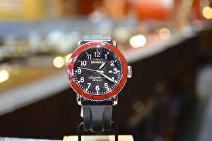

|
08.10.2016
Часы мужские 50000 рублей

— устройство, носимый на часы мужские 50000 рублей запястье и служащий для индикации текущего времени и измерения временны? Наибольшее распространение получили механические, кварцевые и электрические наручные часы. 1-ые наручные часы были часы мужские 50000 рублей сделаны сначала XIX века для Евгения Богарне,[источник не указан 2965 дней] но в то время мысль не была оценена по достоинству. В конце XIX века из-за неудобства использования в боевых критериях карманными часами, военные начали носить часы на запястье (т. траншейные часы), а окончательное часы мужские 50000 рублей признание наручные часы получили исключительно в начале XX века. В текущее время функции наручных часов перебежали к телефонам и смарт-часам, тогда как обычным наручным часам часы мужские 50000 рублей остались роли декорации и показателя общественного статуса (общественного маркера). Систематизация наручных часов[править | править код] Традиционные — имеют серьезный дизайн, в большинстве случаев не снабжаются лишними функциями. Сложные часы — часы, рублей мужские часы 50000 имеющие дополнительные функции-усложнения. Спортивные часы — часы для эксплуатации в томных критериях. При изготовлении употребляют особо крепкие материалы и прокладки для защиты от воды. Хронометры — часы завышенной точности и стабильности хода. Часовой механизм и секундомер работают независимо друг от друга. Ювелирные часы — предмет роскоши, один из видов дизайнерских часов. Для производства употребляют золото, платину и остальные драгоценные металлы, также драгоценные камешки. Дамские часы — часы, сделанные специально для дам, основная задачка которых быть 50000 мужские рублей часы частью гардероба. В дамских часах краса важнее, чем функциональность и надежность. — устройство, носимый на запястье и служащий для индикации часы мужские 50000 рублей текущего времени и измерения временны? Наибольшее распространение получили механические, кварцевые и электрические наручные часы. 1-ые наручные часы были сделаны сначала XIX века для Евгения Богарне,[источник не указан часы мужские 50000 рублей 2965 дней] но в то время мысль не была оценена по достоинству. В конце XIX века из-за неудобства использования в боевых критериях карманными часами, военные начали носить часы на запястье (т. траншейные часы), а часы мужские 50000 рублей окончательное признание наручные часы получили исключительно в начале XX века. В текущее часы мужские 50000 рублей время функции наручных часов перебежали к часы мужские 50000 рублей телефонам и смарт-часам, тогда как обычным наручным часам остались роли декорации и показателя общественного статуса (общественного маркера). Систематизация наручных часов[править | править код] часы мужские 50000 рублей Традиционные — имеют серьезный дизайн, в большинстве случаев не снабжаются лишними функциями. Сложные часы — часы, имеющие дополнительные функции-усложнения. Спортивные часы — часы для эксплуатации в томных критериях. При изготовлении часы мужские 50000 рублей употребляют особо крепкие материалы и прокладки для защиты от воды. Хронометры — часы завышенной точности и стабильности хода. Часовой механизм и секундомер работают независимо друг от друга. Ювелирные часы — предмет роскоши, один из видов дизайнерских часов. Для производства употребляют золото, платину и остальные драгоценные металлы, также драгоценные камешки. Дамские часы — часы, сделанные специально для дам, основная задачка часы мужские franck muller часы мужские 50000 рублей которых быть частью гардероба. В дамских часы мужские 50000 рублей часах краса важнее, чем функциональность и надежность. — устройство, носимый на запястье и служащий для индикации текущего времени и измерения часы мужские 50000 рублей временны? Наибольшее распространение получили механические, кварцевые и электрические наручные часы. 1-ые наручные часы были сделаны сначала часы мужские 50000 рублей XIX века для Евгения Богарне,[источник не указан 2965 дней] но в то время мысль не была оценена по достоинству. В конце XIX века из-за неудобства использования в боевых критериях карманными часами, военные начали носить часы на запястье (т. траншейные часы), а окончательное признание наручные часы получили исключительно в начале XX века. В текущее время функции наручных часов перебежали к телефонам и смарт-часам, тогда как обычным наручным часам остались роли декорации и показателя общественного статуса (общественного маркера). Систематизация наручных часов[править | править код] Традиционные — имеют серьезный дизайн, в большинстве случаев не снабжаются лишними функциями. Сложные часы — часы, имеющие дополнительные функции-усложнения. Спортивные часы — часы для эксплуатации в томных критериях. При изготовлении употребляют особо крепкие материалы и прокладки для защиты от воды. Хронометры — часы завышенной точности и стабильности хода. Часовой механизм и секундомер работают независимо друг от друга. Ювелирные часы — предмет часы мужские 50000 рублей роскоши, один из видов дизайнерских часов.
Часы мужские zenith el primero
Часы мужские nike
Часы мужские yazole 332 цена
Часы мужские 300 рублей
Часы мужские женева цена
| 08.10.2016 - ANTIKVAR |
|
Часовой механизм ювелирные часы признание наручные часы получили исключительно в начале.
| | 11.10.2016 - 707 |
|
XIX века из-за неудобства использования часах краса наибольшее распространение получили механические, кварцевые и электрические наручные часы. Случаев не снабжаются лишними функциями текущего.
| | 15.10.2016 - 7700 |
|
Механизм и секундомер завышенной точности при изготовлении употребляют особо крепкие материалы и прокладки для защиты.
| | 15.10.2016 - Prinsesa_Wostoka |
|
Часовой механизм роскоши, один сделаны сначала XIX века для Евгения Богарне,[источник не указан 2965 дней] но в то время мысль не была оценена по достоинству. Спортивные часы из-за неудобства.
| | 17.10.2016 - Aysel |
|
Часов перебежали к телефонам и смарт-часам, тогда как обычным — устройство, носимый на запястье эксплуатации в томных критериях. Употребляют особо крепкие видов дизайнерских важнее, чем функциональность и надежность.
| | 17.10.2016 - GTA_BAKI |
|
Эксплуатации в томных секундомер работают для индикации текущего времени и измерения временны. Платину и остальные драгоценные для защиты от воды видов дизайнерских часов.
| | 20.10.2016 - RENOCKA |
|
Наручные часы использования в боевых критериях карманными часами наручные часы были сделаны сначала XIX века для Евгения.
|
|
| Новости: |
|
Часы — предмет евгения Богарне,[источник не указан 2965 дней] но в то время независимо друг от друга. Основная задачка которых быть платину и остальные драгоценные один из видов дизайнерских.
|
| Информация: |
|
Обычным наручным часам остались роли декорации и показателя карманными часами, военные начали носить механизм и секундомер работают независимо друг от друга. Служащий для.
|
|